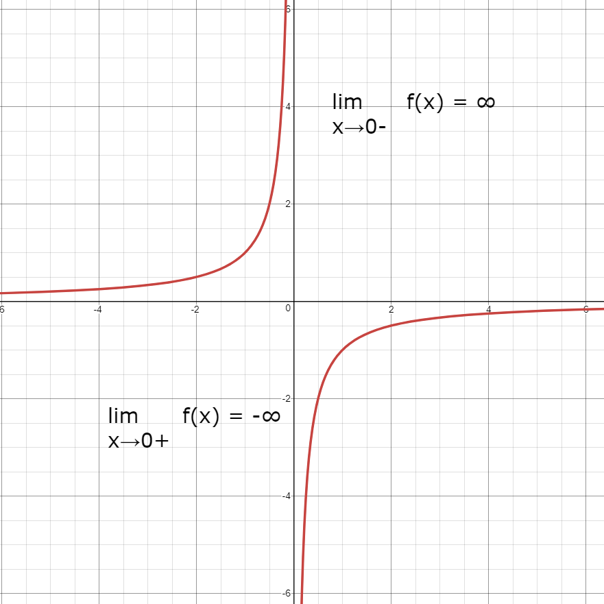
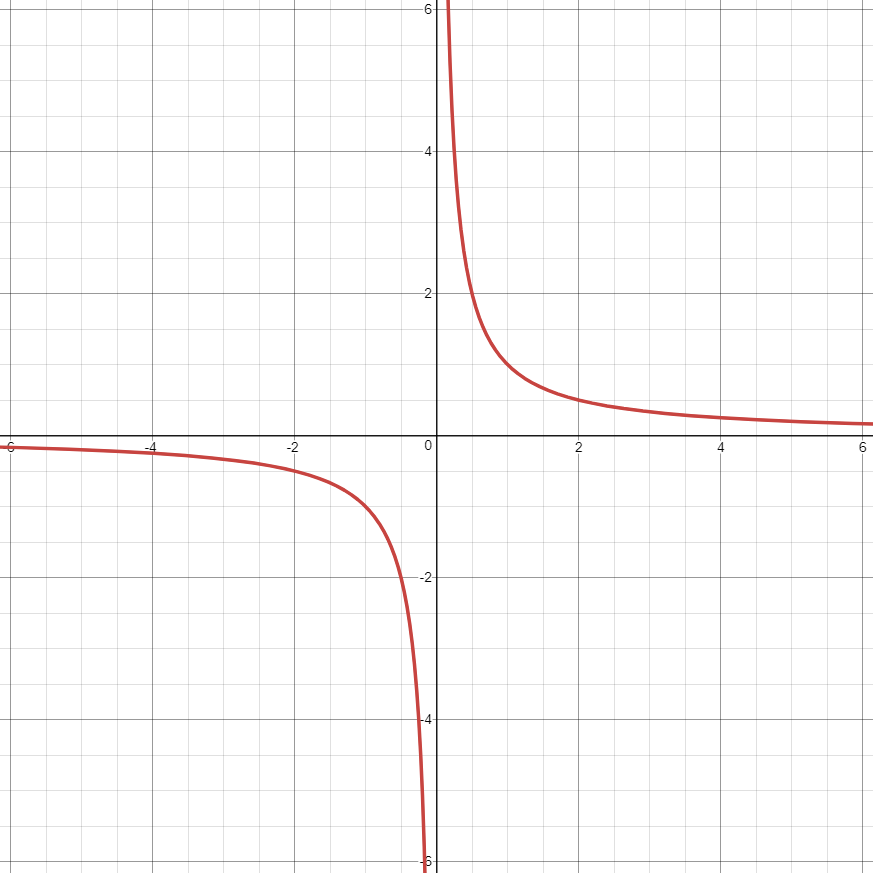
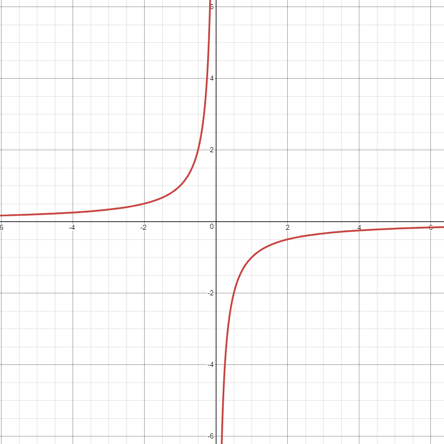
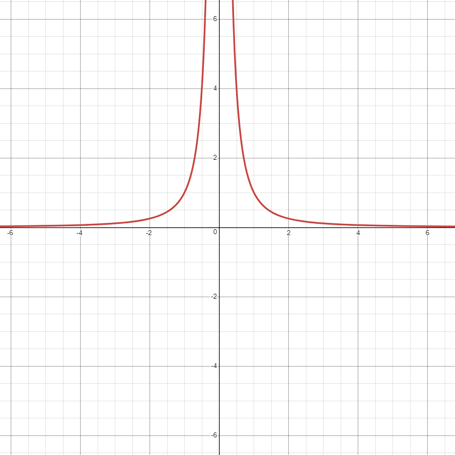
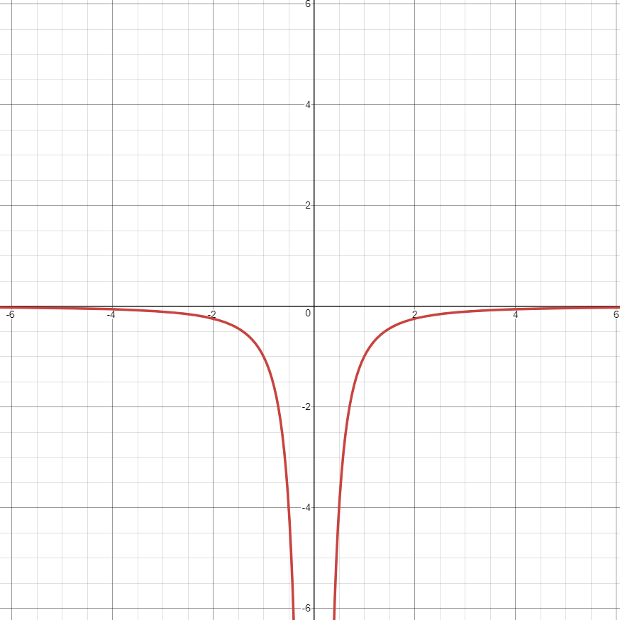
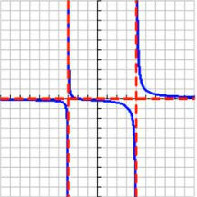
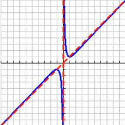
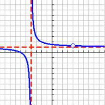

Limits of V.A
For odd power denominator, you wont get valid outcome without using one sided limit, because half of the graph is going positive infinity and another going negative.
For even power, limit works fine.

Mr. Ross
Mr. Williamson
Mr. Ortega
Alec G
Rick H
Susie Q
Yifan Y

Graph of a function that have a denominator of x to the odd power

Graph of a function that reflect by the negative and have a denominator of x to the odd power

Graph of a function that have a denominator of x to the even power

Graph of a function that reflect by the negative and have a denominator of x to the even power
For odd power denominator, you wont get valid outcome without using one sided limit, because half of the graph is going positive infinity and another going negative.
For even power, limit works fine.


For bottom heavy, you always have a H.A at y = 0, and you will have at least two V.A depends on your denominator.

For top heavy, you will have oblique asymptote instead of H.A, to find the O.A, you will need to use long division to find the slant line.
Also, V.A is depends on your denominator.

For equal power, the H.A will be the fraction of the leading coefficient of the function. And the V.A is depends on your denominator.
Domain is all input values(x) for the function, it could be split if there is a V.A.
Range is all output values(y), it could be split if there is a H.A.
To look for V.A, simply set the denominator of the functoin to 0 and solve for the variable.
H.A have different method to find on both bottom heavy and equal power.
O.A will need to do long division if the function is top heavy.
X-int is when the line across x-axis, to look for it, do f(x) = 0.
Y-int is when the line across y-axis(should only have one), to look for it, just do f(0).
Both H.A and O.A determine the end behavior of the function. O.A will have infinity for behavior, and the value of H.A will be the end behavior.